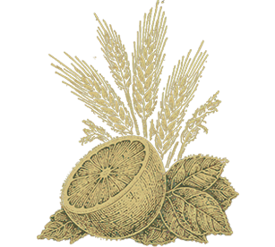
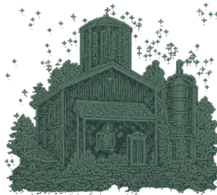
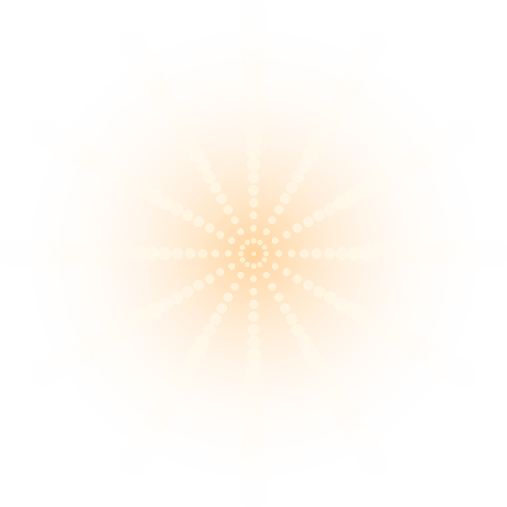
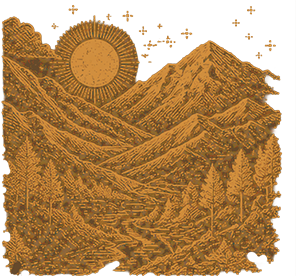
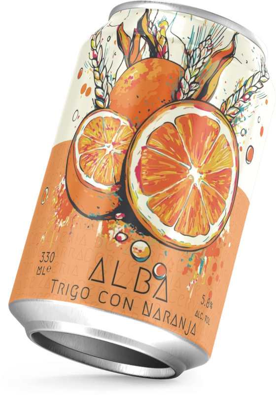

ALBA · Trigo con Naranja
Are You Ready?
No app needed · Camera will open
Can · Detected
A small ceremony before the first sip.
No app needed
The story doesn't end
with the bottle.
People already gathered around this mesa